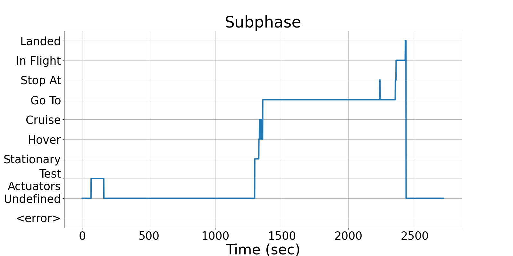

Integrating Runtime Verification into an
Automated UAS Traffic Management System
Matthew Cauwels, Abigail Hammer, Benjamin Hertz, Phillip H. Jones, Kristin Y. Rozier
This webpage contains supplementary specifications for "Integrating Runtime Verification into an
Automated UAS Traffic Management System" by M. Cauwels, A. Hammer, B. Hertz, P. H. Jones, and K. Y. Rozier
CS_UAS_4
Specification Description
If a UAS if flying toward as STOP waypoint, it will eventually decelerate.
Signals Required
Subphase, AccD, AccE, AccN
Boolean Conversion of Signals to Atomic Inputs
Subphase_eq_Stop: Subphase == "Stop"
AccD_lt_0: AccD < 0
AccN_lt_0: AccN < 0
AccE_lt_0: AccE < 0MLTL Specification
Subphase_eq_Stop → ♢[0,M] (AccD_lt_0 ∧ AccN_lt_0 ∧ AccE_lt_0)
Fault Explanation
UAS is not slowing down while heading to a stop.
Additional Notes
Until such a time that a test flight with the Vapor 55 can be completed, this specification is unable to be fully tested.
Figures
